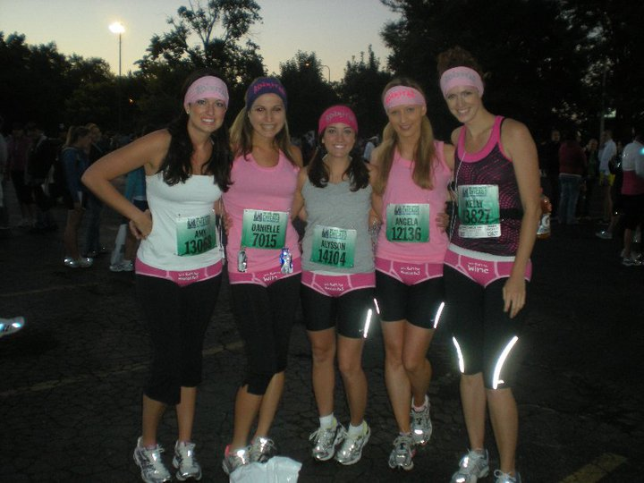
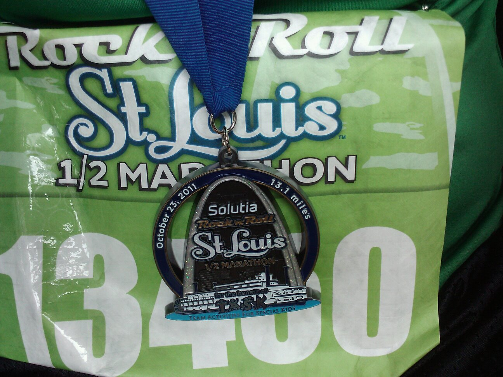
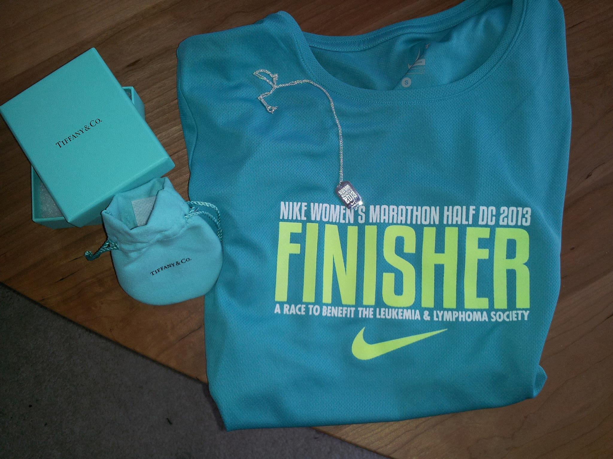
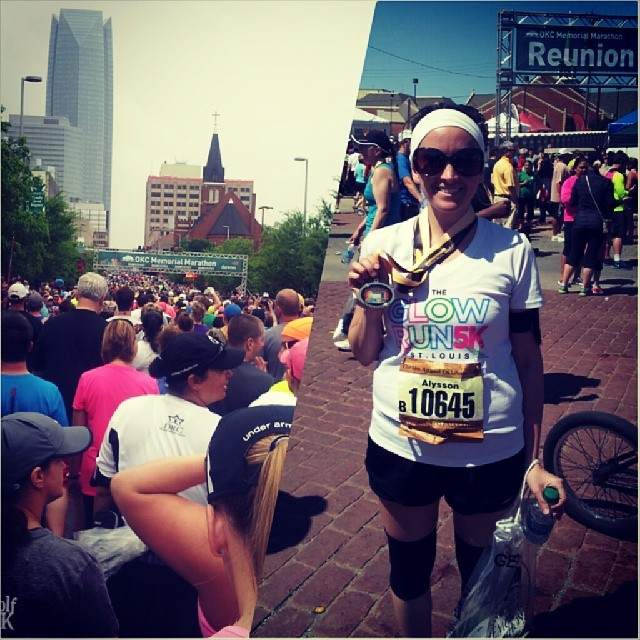
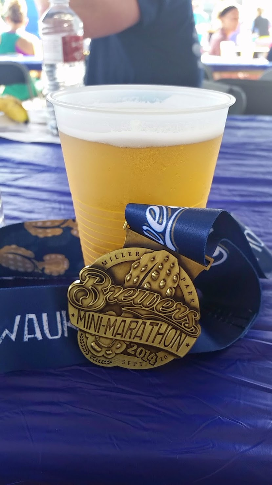
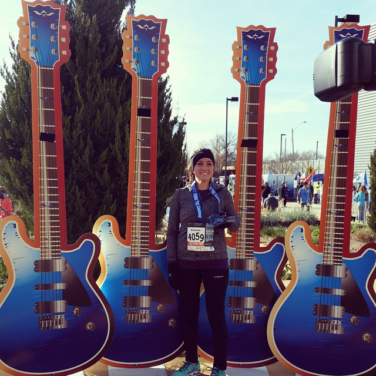
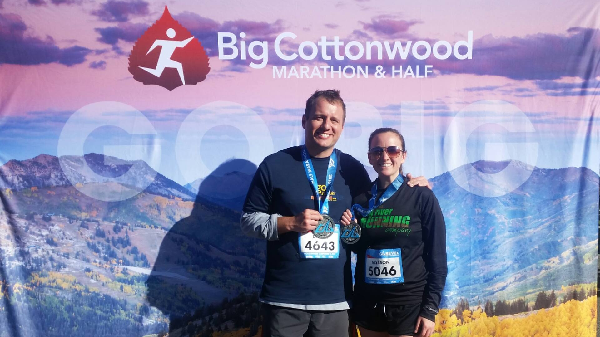
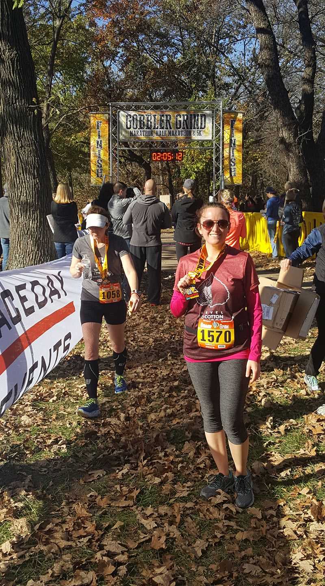
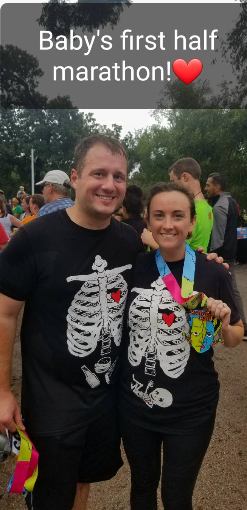
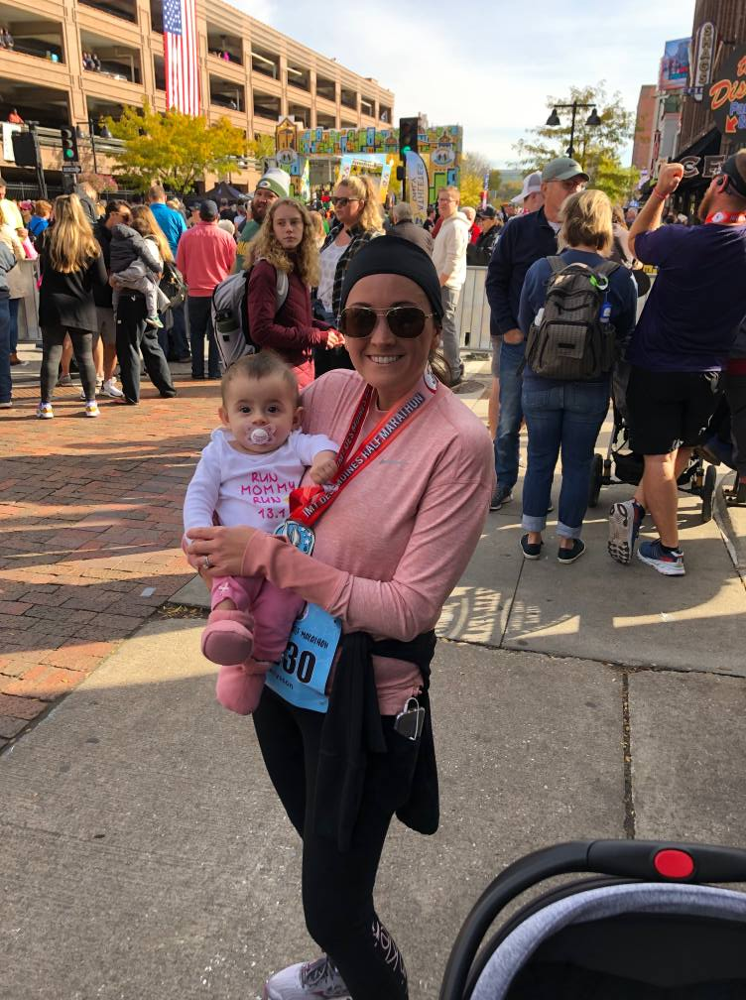

In June of 2010 a friend and I decided we wanted to run a half marathon. We started running together after work and on weekends. 3 months later we ran our first half marathon.
I love to travel and decided I wanted to run a half marathon in every state, not only as a way to see every state, but as a life long fitness goal. As of this post, I have completed 10 half marathons.
I have started tracking the half marathons I would like to do in the states that I have not completed and will add more to the list below as I find new runs that I am interested in.
States I've completed
Illinois
Chicago Half Marathon & 5K
September 12, 2010
Chicago, Illinois

This was my first half marathon. I went with a group of friends for the weekend.
We found some underwear that said "will run for beer", "will run for wine" and "will run for margaritas".
We each bought one and wore them on race day (outside our running pants) along with a "rockstar" headband.
Missouri
Rock 'n' Roll St. Louis
October 23rd, 2011
St. Louis, Missouri

D.C. - The "plus one"
Nike Women's Half Marathon
April 28th, 2013
Washington, D.C.

My favorite half marathon! I loved everything about my stay in D.C., from getting to stay and go out
with my cousins who I don't get to see very often, to all the sights. My only mistake was walking for 8 hours
And, the run itself was amazing! So much to see along the way and the weather was perfect.
Oklahoma
Oklahoma City Memorial Marathon
April 27th, 2014
Oklahoma City, Oklahoma

One of my least favorite runs! There was a rain delay, so we all just slept in parking garages around the start
line until the rain stopped. By the time the race started I hadn't had any food or water for 3+ hours. Not a great start.
The course itself was nice, but this was definitely a rough one.
Wisconsin
Brewers Mini Marathon & 10K
September 20th, 2014
Milwaukee, Wisconsin

This run was my first half marathon with my husband. We almost missed the run because we took a wrong turn and
couldn't get back to the starting area as all of the roads were closed. We got to the start line
just as they were taking it down. For this run we got to run through the Brewer's stadium just before crossing the finish line.
Mississippi
Mississippi Blues Marathon
January 10th, 2015
Jackson, Mississippi

One of my favorites! Up there with Utah's half.
Utah
Big Cottonwood Marathon and Half
September 10th, 2016

Probably my 2nd favorite run!
Kansas
Gobbler Grind
November 13th, 2016

Finally got under 2:00:00 in this run!
Texas
The Halloween Half & 5K
October 20th, 2018
Fort Worth, Texas

My least favorite half marathon! The course was poorly marked, so we all went the wrong way for 1/4th of a mile
Half of the course was flooded and I was 15 weeks pregnant. It was not a good run. However, this was our pregnancy announcement to
our families and friends so atleast some good came out of it!
Iowa
IMT Des Moines Marathon
October 20th, 2019
Des Moines, Iowa

This run was exactly one year after our pregnancy announcement run.